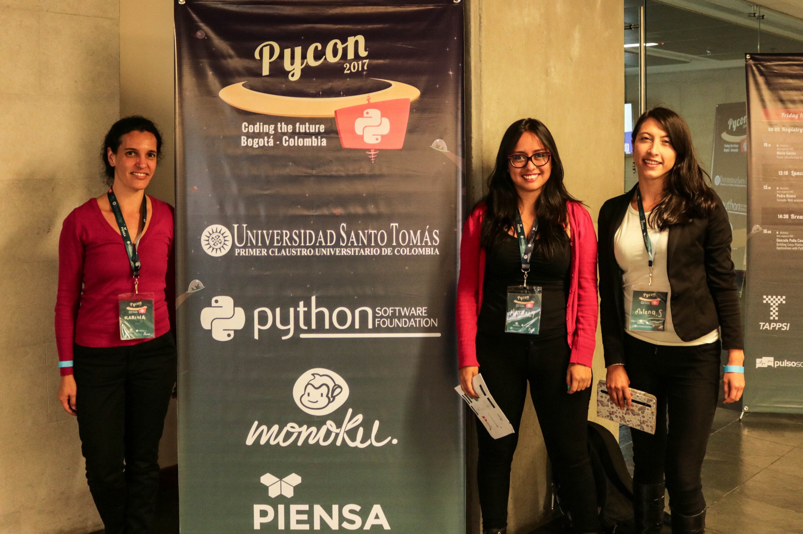
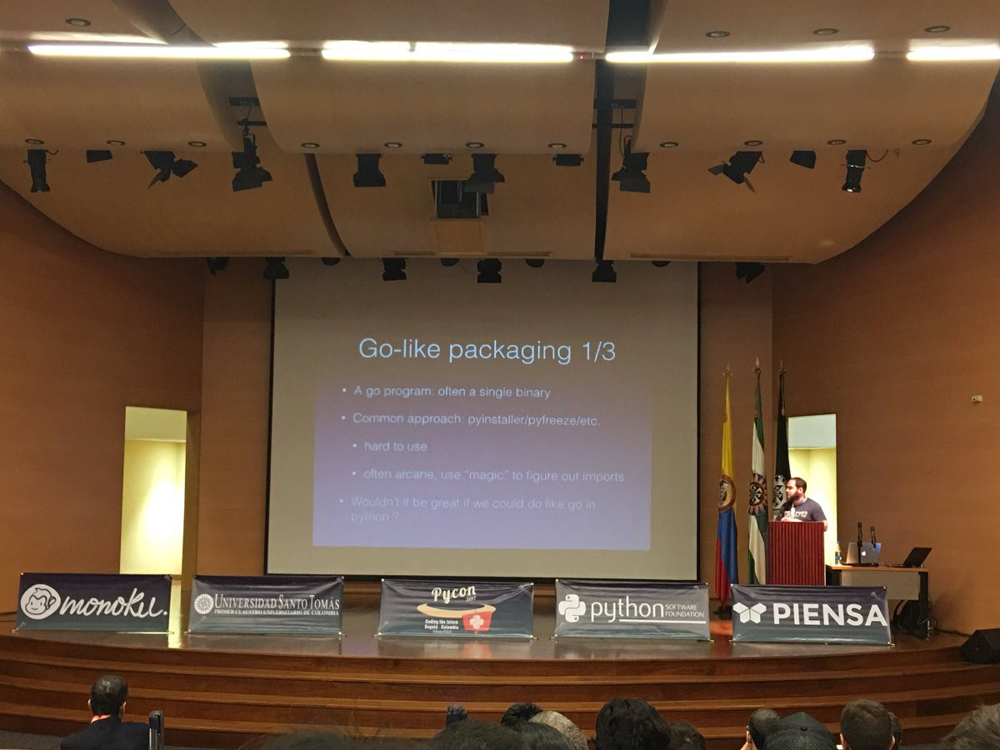
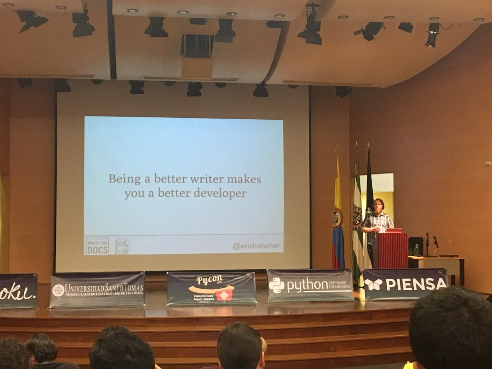
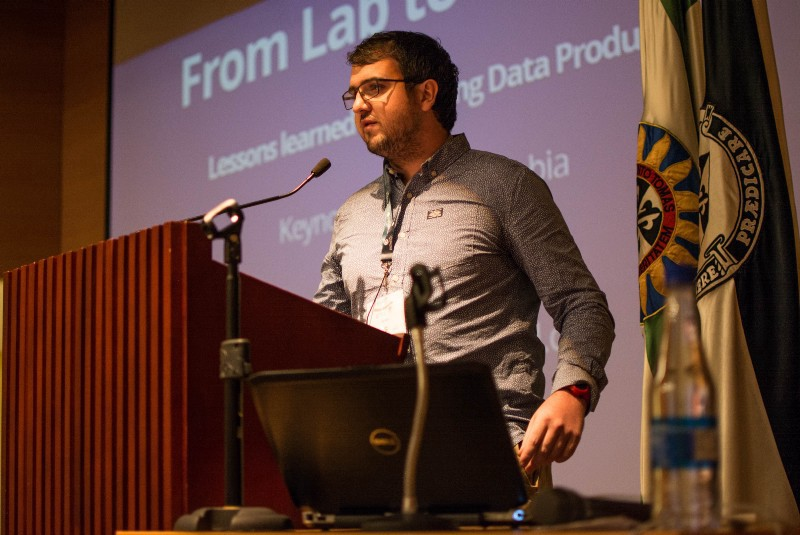
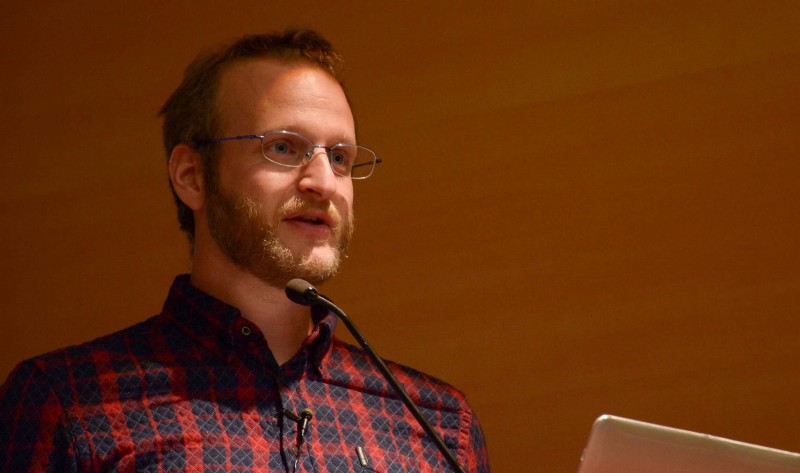
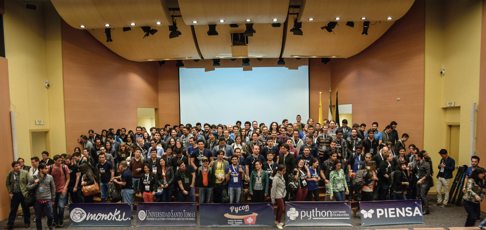

El pasado 10 y 11 de Febrero del presente año se llevó a cabo en la ciudad de Bogotá, Colombia la Primera Conferencia de Python en Colombia — PyCon Colombia.
(To read this article in english please click here)
Algunos datos importantes a resaltar sobre esta son:
- 2 Días de conferencias
- 209 Asistentes
- 40 Voluntarios
- 9 Países participantes
- 4 Oradores internacionales
- 28 Conferencistas
- 6 Talleristas
- 32 Charlas
La conferencia tuvo lugar en las modernas instalaciones de la Universidad Santo Tomás, gracias al compromiso del grupo docente de la Facultad de Estadística y el apoyo de las directivas de la universidad, tanto en las actividades de la conferencia como el la logística del evento. Además contamos con el importante apoyo de los sponsor Python Software Foundation, Monoku y Piensa Labs, quienes también apoyaron con su equipo humano al contenido de conocimiento de la conferencia, presentando temas en el campo del internet de las cosas, Análisis semántico y procesamiento de imágenes, entre otros.

Participantes del evento junto a pendones con logos de los sponsor
El apoyo de aliados como Tappsi, Bogodev, Pulso Social, Social Atom PR, Sikuani, y PyCharm ,quienes suministraron transporte, difusión en redes sociales, publicación de contenido en revistas digitales y licencias, permitió que la conferencia tuviera un gran impacto.
Se recibieron más de 70 propuestas, y finalmente fueron seleccionados 34 conferencistas quienes, sumados a los 4 oradores principales, dieron al evento una participación total de 9 países, entre ellos: Rusia, Eslovakia, México, Estados Unidos, Argentina, Brasil, Perú y Colombia; demostrando así que el PyCon Colombia 2017 fue un evento de talla internacional con impacto en el continente Americano, Europeo y Latinoamericano. Fueron dos días colmados de conocimiento de alta calidad en el campo de desarrollo y programación, se trabajaron simultáneamente en 2 auditorios con un total de 32 charlas y un espacio para 6 talleres prácticos.
El primer día se dio inició con la intervención de John Roa, organizador principal del evento, dando la bienvenida a los asistentes, conferencistas y talleristas, siendo la apertura oficial al evento.
Las charlas iniciaron en el auditorio principal con David Cournapeau, orador principal que habló de packaging en Python, su importancia y su futuro.

David Cournapeau— PyCon Colombia 2017
Después de esta charla y a lo largo del día se presentaron los siguientes conferencistas:
- Sebatián Ramirez: Introducción a Celery para desarrollo distribuido con Python cons
- Ariel Nuñez: Interviniendo mi carro con Python
- Mario García: Flask: Introducción a Python para la web
- Juan Pablo Scaletti: Internacionalización Pythónica inspirada en Rails
- Jorge Martínez: Procesamiento de imágenes y visión por computador
- Julian Amaya: Creando skills para Alexa
- Lennin Suescun: Enseñándole a los computadores como entender el mundo
- David Cardozo: Julia: un nuevo lenguaje para computación numérica y científica
- Fabian Latorre: Modelado no supervisado de temas y texto con una representación eficiente de contenedores de frases
- Pedro Rivera: Tornado: Web asíncrona de alto desempeño
- Cristian García: Introducción al “Aprendizaje Profundo” con TensorFlow
- Cristian Salamea: Arquitectura de OpenEdX
- Jennifer Velez: Python en bioinformática
- Paulo Alvarado: Creando páginas web con django CMS
- Gonzalo Peña Castellanos: Construye aplicaciones de escritorio multi-plataforma con Python y Qt
- Jaime Forero: Mapeando el universo con Python
- Gustavo Angulo: Python en microcontroladores con Micropython
Al final del día se presentó el segundo orador principal, Eric Holsher quien compartió sus reflexiones con respecto al pasado, presente y futuro de la documentación.

Eric Holscher — PyCon Colombia 2017. Photo taken from (https://twitter.com/nobmann88/status/830175550002036740/photo/1)
El orador principal Peadar Coyle dio apertura al segundo día, compartiendo lecciones aprendidas desarrollado productos orientados al manejo de datos.

Peadar Coyle — PyCon Colombia 2017
Durante éste día también se presentaron los siguientes conferencistas:
- Manuel Kauffman: Argentina en Python: comunidad, sueños, viajes y aprendizaje
- Pablo Vallejo: De VirtualEnv a Docker con Django
- Alejandro Correa Bahnsen: Aprendizaje de Máquina práctico con Scikit-Learn
- Camilo Nova: Jazzband
- Robert Kuska: Alimenta to código a Coala
- Wayner Barrios: Entendimiento semántico de alto nivel de actividades humanas en videos
- David Altamar: Conteo automático de pasajeros en buses en la ciudad de Pereira con Python
- Jorge Armando Martinez De Los Reyes: Aplicaciones web sin servidor con Python sobre AWS
- Eduardo Galeano: Solo funciones! (Programación funcional en Python)
- Juan Carlos Mendez: Utilizando Python para analizar datos espaciales
- Vera Mazhuga: Flask con todas las arandelas
- Andres Guijarro: Python como una plataforma confiable de negocios para la innovación
- Vinicius Pacheco: Introducción a Gevent
- Daniel Moreno: Moviendo y transformando datos con Airflow
- Diego Peña: Introducción a las herramientas para visualización de datos con Python
- Rafael Laverde: Canales en Django — WebSockets and HTTP2 con Django
- Miguel Cabrera: Construyendo líneas de datos con Python
La última charla principal del evento estuvo a cargo de Jacob Kaplan Moss, quien dio un excelente cierre al evento compartiendo sus reflexiones sobre diversidad en la industria del software.

Jacob Kaplan Moss — PyCon Colombia 2017
Uno de los aspectos más destacados de PyCon es su comunidad caracterizada por estar conformada por individuos con una gran variedad de intereses, y PyCon Colombia no fue la excepción; allí se reunieron estadistas, físicos, químicos, ingenieros de sistemas, matemáticos, científicos de datos, científicos de computación, educadores, entre otros. Fue una combinación fascinante que permitió a cada persona ampliar significativamente su perspectiva de la tecnología y sus aplicaciones en el mundo.
El evento también tuvo dentro de sus objetivos la inclusión de género y equidad en el campo tecnológico, para ello se llevó a cabo el “Taller de Programación para Mujeres Django Girls — PyCon Colombia” el día sábado 12 de Febrero, un taller intensivo de un día donde las participantes aprendieron desde cero a programar su primera página web usando herramientas como Python, Django, HTML, CSS, entre otras.
El factor más importante para lograr un evento de calidad y calidez fue aportado por el aporte humano de los voluntarios, quienes jugaron un papel fundamental en la realización de la PyCon Colombia 2017, fue gracias a ellos que se pudo llevar a la realidad tangible el sueño de realizar un evento de carácter internacional que vinculó a toda la comunidad de programadores y desarrolladores a estar en un mismo lugar compartiendo conocimiento y experiencias. Ellos son: John Roa (Organizador del evento), Mario Morales (Contacto con la PSF), Edwin Jeréz (Director de arte y diseño), Patricia Montoya (Mercadeo de tiquetes), Carlos Salgado (Logística), Jeniffer Velez (Logística), Juan Carlos Rodriguez (Logística), Jorge Martinez (Logística), Carlos Andrés Sierra (Conferencistas), Valéria Blandón (Conferencistas), María Angélica Velandia (Redes sociales), Andrés Duque (Redes sociales), Cristian Otálvaro (Redes sociales), Jorge Galvis (Aplicación Móvil), Michael Pierre (Patrocinadores), Ana Milena Suárez (Sitio web), Ivan Ramirez (Manejo de personal), Nicolás Molina (Manejo de personal, Patrocinadores), Gustavo Angulo (Manejo de personal), Andrea Molina Monroy (Mercadeo), Fernando Duque (Diseño), Andrés Muñoz (Django Girls), Johanna Sanchez (Django Girls), Paola Pacheco (Django Girls), José Fernando Zea (Lugar y auditorios), Alejandro Correa (Lugar y auditorios).
PyCon Colombia 2017 fue el momento adecuado para formalizar la comunidad de Python Colombia, que actúa como facilitador y promotor de los distintos grupos y actividades relacionados con Python en todo el territorio colombiano.

Participantes del PyCon Colombia 2017
Lo que se viene para el 2018
Un día después de la PyCon Colombia 2017, los integrantes del equipo organizador compuesto por John Roa, Gonzalo Peña, Johana Sanchez y Carlos Sierra, ya estaban pensando en PyCon Colombia 2018 quien vé en la academia una gran oportunidad para conectarse con más personas que ya están usando Python, y desafortunadamente muchos de ellos desconocen la existencia del evento PyCon Colombia, la comunidad Python Colombia y los meetups que se vienen realizando a nivel nacional.
Las expectativas de PyCon Colombia 2018 son bastante ambiciosas, el grupo organizador sabe que es un gran reto que requiere un gran esfuerzo para llevarlo a cabo. Esto es lo que se tiene proyectado:
- +350 Asistentes
- +60 Voluntarios
- 3 Días de conferencias
- 6 Oradores principales
- +30 Oradores
- 30 Charlas
- +10 Talleres prácticos
Conforme el grupo organizador vaya avanzando con las tareas propuestas, serán comunicados los avances y modificaciones por los canales oficiales para que la comunidad siga de cerca las labores de preparación del PyCon Colombia 2018.
Si quieres recibir información sobre la próxima conferencia de Python en Colombia — PyCon Colombia 2018 ¡Subscríbete Aquí!
Facebook, Twitter, Youtube, Instagram, Medium y correo electrónico son los canales oficiales con los cuales PyCon Colombia cuenta actualmente.